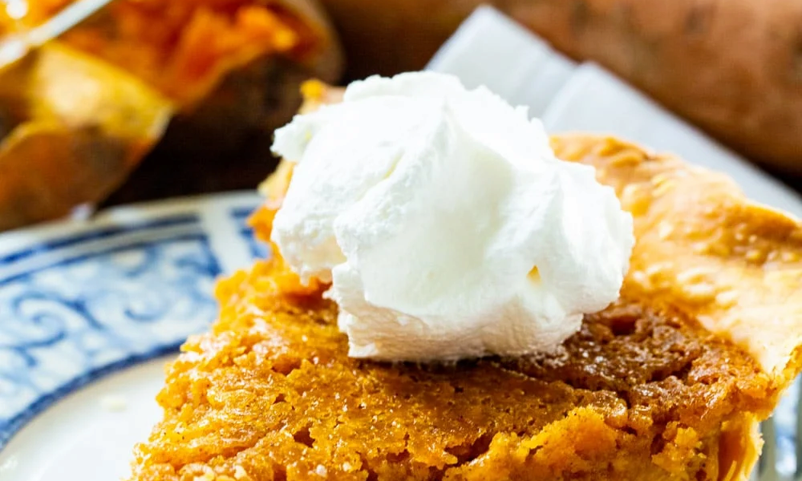

Home
Spanish
Japanese
Cajun
Cuban
Puerto Rican
Cajun Dessert Recipe
SOUTHERN SWEET POTATO PIE

INGREDIENTS LIST
INGREDIENTS:
1 cup mashed sweet potato
1/2 cup salted butter, softened
3/4 cup light brown sugar
1/2 cup granulated sugar
1/2 cup evaporated milk
2 large eggs
1 teaspoon vanilla extract
1/2 teaspoon ground cinnamon
1/4 teaspoon ginger
1/4 teaspoon nutmeg
1 tablespoon all-purpose flour
1 (9-inch) unbaked pie crust
Comment Form
is loading comments...